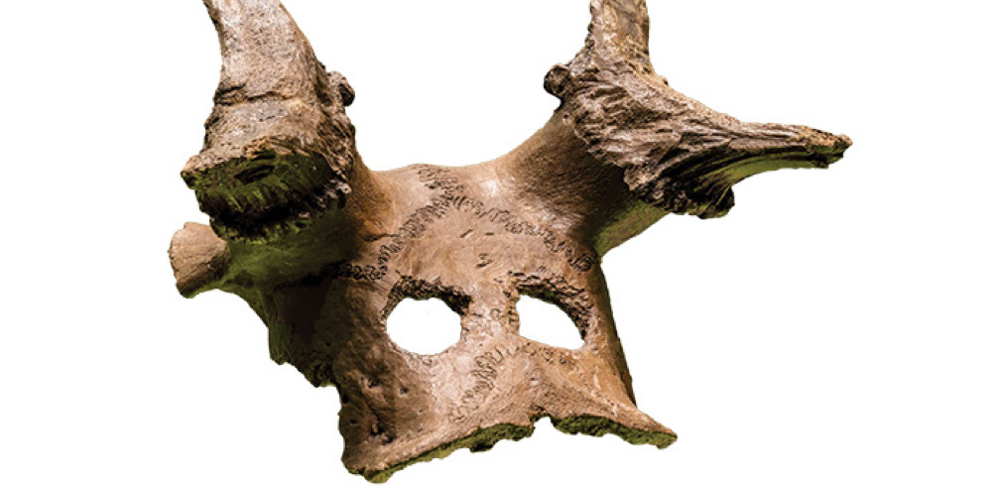

Materials

https://i0.wp.com/archaeology.co.uk/wp-content/uploads/2019/05/2018-06-13-2529-1-e1558604849106.jpg?w=522&ssl=1
Moore initially found flint, bone, and antler in his first excavations. Clark’s findings were more significant, uncovering man-made structures such as platforms, and within them, animal remains such as: red deer, roe deer, wild boar, elk, auroch (wild cow), birds, beaver, pine marten, hedgehog, hare, and badger. He found some flint artifacts as well, including scrapers, axes, and arrow tips. He also found headgear crafted from the bones of deer. The Vale of Pickering Research Trust team found concentrations of large wood segments, implying evidence of carpentry.